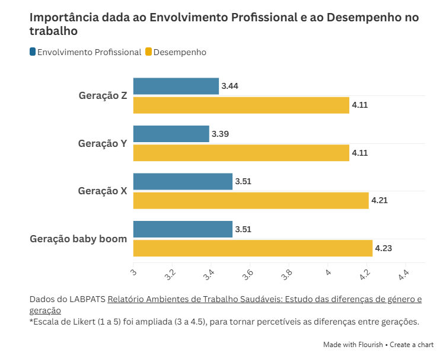

Tânia Gaspar: "Não é uma perda de tempo promover a saúde dos profissionais"
Tânia Gaspar, fundadora do Laboratório Português da Ambientes de Trabalho Saudáveis (LABPATS), afirma ser necessário promover a saúde dos profissionais e a segurança psicológica no trabalho.
Por Joana Araújo Cardoso e Maria Dias
Tânia Gaspar, psicóloga e fundadora do LABPATS | Joana Araújo Cardoso
O Relatório Ambientes de Trabalho Saudáveis, desenvolvido pelo LABPATS, concluiu que os trabalhadores da Geração Z são os que mais privilegiam a ética e valores das associações, o ambiente psicossocial e o compromisso com a liderança. Ademais, o estudo sugere uma crescente preocução com a saúde dos profissionais no contexto laboral.
Tânia Gaspar explica que a geração atual não procura apenas estabilidade financeira, mas também qualidade de vida e tempo para a família e os interesses pessoais.
«O dinheiro é importante, mas se efetivamente for pôr em causa essa capacidade de estabelecer os limites e ter o seu equilíbrio, já não é tão importante.»
Para estes jovens, a escolha de emprego não se resume a saber se a empresa os quer contratar, mas “se eles querem ficar com a empresa" e se os seus valores são compatíveis. Tânia esclarece que este é um fator que tem atualmente “mais peso na escolha de profissão”.
Um mercado em mudança
Algumas entidades empregadoras começam a adaptar-se às expectativas da geração mais nova (ver artigo), com o objetivo de recrutar candidatos para as vagas que oferecem. A incorporação de princípios que os jovens prezam nas empresas, como o ambientalismo e a igualdade de género, é uma dessas tentativas de adaptação.
Neste sentido, um dos grandes desafios para as empresas é “conciliar a gestão dos recursos humanos mais novos com os antigos”. A preocupação surge porque "oferecer benefícios a uns" pode provocar noutros a sensação de estarem a ser "despromovidos e desvalorizados", gerando possíveis tensões internas. Contudo, tal como explica a professora da Universidade Lusófona de Lisboa, “as empresas vão resistir” à pressão de se adaptar às exigências dos jovens trabalhadores, uma vez que “ainda não sentem essa necessidade total”.
Avanços e recuos
A pandemia de Covid-19 acelerou a adoção de modelos de trabalho mais flexíveis, como o teletrabalho. Esta mudança poderia ser uma alavanca para alterações mais profundas nos métodos de organização das empresas e melhoramento da saúde dos profissionais. No entanto, a psicóloga diz não ter a certeza "se conseguimos aproveitar este andamento”.
«Acho que as coisas se estão a desenvolver (…) relativamente rápido, especialmente nos setores de atividade mais inovadores e mais jovens, mas com estas situações globais tudo isto deixa de fazer tanto sentido e voltamos alguns anos atrás.»
O atual contexto geopolítico causa diversas incertezas nos diferentes setores de atividade. O receio dos conflitos internacionais leva a que as empresas se fechem aos ideais de trabalho modernos e rejeitem a mudança. Este cenário resulta no "retardar desta evolução", cuja aceleração se verificou durante a pandemia.
Trabalhar para viver ou viver para trabalhar?
Comparativamente às gerações mais velhas, a Geração Z demonstra uma capacidade maior de impor limites ao tempo dedicado ao trabalho. Isto deve-se ao facto de terem crescido a observar as gerações anteriores dedicarem grande parte do tempo à profissão e não querem repetir esse padrão.
Como refere Tânia, antigamente "o trabalho tinha um peso maior nos outros pilares da vida" e agora os mais novos "tentam conciliar durante mais tempo estas várias áreas". Esta tendência é confirmada no relatório do LABPATS, que revela que a profissão ocupa um papel secundário na vida dos mais jovens.

Por um lado, estes jovens destacam-se pela vontade de “experimentar coisas novas”, o que conduz a que não permaneçam por longos períodos na mesma empresa. Por outro lado, essa situação pode criar dificuldades na formação de laços de confiança entre empregadores e trabalhadores. Além disso, a exploração de várias oportunidades pode não lhes permitir aprofundar conhecimentos ou especializar-se em determinada área.
«Enquanto há uns anos atrás o objetivo era começar numa empresa e crescer nessa empresa (...), hoje em dia isso se calhar (...) já não é bem visto.»
Segundo dados do LABPATS, os profissionais mais novos são os que demonstram resultados mais positivos na questão da saúde mental. No entanto, Tânia avisa que o leque de oportunidades de escolha dos jovens pode também gerar alguma ansiedade: "No fundo, a liberdade está associada a alguma angústia de decisão".
Enquanto psicóloga, Tânia Gaspar relembra que "o essencial é conseguirem ser mais assertivos com vocês próprios e com os outros em relação onde é que acaba o vosso tempo de trabalho e começa o vosso tempo da vida pessoal".